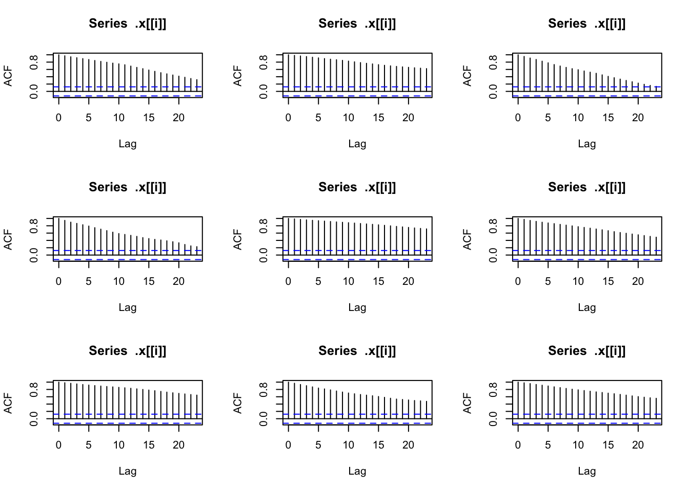
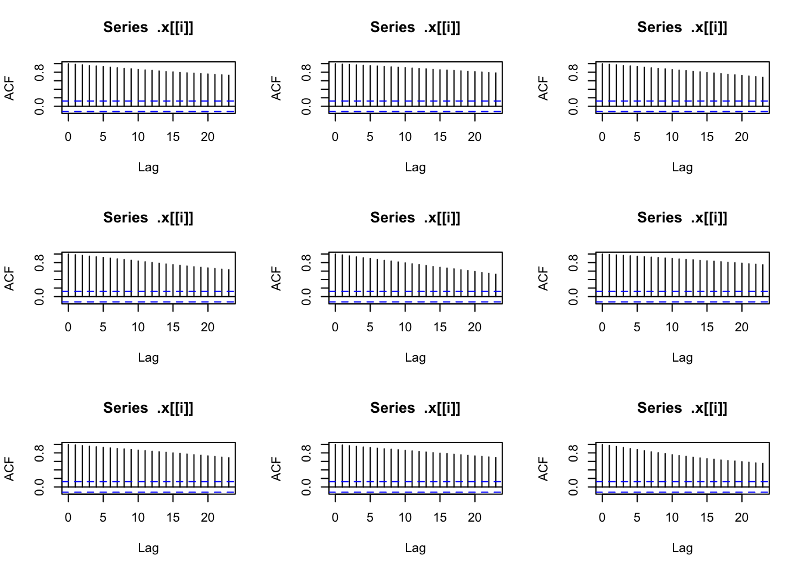

Chapter 3 Random Walk
Let sequence \(X_1, X_2, ...,X_t\) be i.i.d random variables and \(S_0\) be an arbitrary starting point and \[S_t=S_0+X_1+X_2+...+X_t \] The series \((S_t)_{t \geq 0}\) is a called random walk and \(X_1, X_2, ...,X_t\) are its steps.
3.1 Simple random walk
Let series \((S_t)_{t \geq 0}\) be a random walk \[S_t=S_0+X_1+X_2+...+X_t \] If the steps are either \(1\) or \(-1\) with a \(50\%\) probability for either value, and set \(S_{0}=0\) then the random walk is called a simple random walk.
library(tidyverse)
simple=map(1:9,
~sample(c(1,-1),
size=250,
replace=T,
prob=c(0.5,0.5)) %>%
cumsum)par(mfrow=c(3,3))
plots=simple %>%
map(
plot,
type="l",
col="blue",
ylab="the accumulated money")
par(mfrow=c(3,3))
plots=simple %>%
map(acf)
3.2 Normal random walk
Let series \((S_t)_{t \geq 0}\) be a random walk \[S_t=S_0+Z_1+Z_2+...+Z_t \] If the steps follow standard normal distribution, i.e. \(Z \sim \mathcal{N}(0,1)\), then the random walk is called a normal random walk. We have \(E[S_t|S_0]=S_0\) and \(\mathbb{Var}(S_t|S_0)=\sigma_t^2=\sigma^2 t\).
library(tidyverse)
normal=map(1:9,
~rnorm(250,0,1) %>%
cumsum) par(mfrow=c(3,3))
plots=normal %>%
map(
plot,
type="l",
col="blue",
ylab="the accumulated money")
par(mfrow=c(3,3))
plots=normal %>%
map(acf)
3.3 Random walk with drift
Let series \((S_t)_{t \geq 0}\) be a random walk \[\begin{align*} S_t&=S_0+X_1+X_2+...+X_t \\ &=S_{t-1}+X_t \\ &= \mu + S_{t-1}+ Z_t \end{align*}\] If the steps are normally distributed, i.e. \(X \sim \mathcal{N}(\mu,\sigma)\), then the random walk is called a random walk with drift. We have \(E[S_t|S_0]=S_0+ \mu t\) and \(\mathbb{Var}(S_t|S_0)=\sigma_t^2=\sigma^2 t\).
library(tidyverse)
drift=map(1:9,
~rnorm(250,1,5) %>%
cumsum)
par(mfrow=c(3,3))
plots= drift %>%
map(
plot,
type="l",
col="blue",
ylab="the accumulated money")
par(mfrow=c(3,3))
plots=drift %>%
map(acf)
3.4 Geometric random walk
Let series \((Y_t(t))_{t \geq 0}\) be a random walk \[\begin{align*} Y_t(t)&=Y_1+Y_2+...+Y_t \\ \ln \left( \frac{P_t}{P_0}\right)&=Y_1+Y_2+...+Y_t \\ P_t&=P_0e^{Y_1+Y_2+...+Y_t} \end{align*}\] \((P_t)_{t \geq0}\) is called geometric random walks or exponential random walk. If \(Y_1,Y_2,...,Y_t\) are i.i.d and \(Y \sim \mathcal{N}(\mu,\sigma^2)\), then \(P_t\) is a lognormal random walk.
library(tidyverse)
geometric=map(1:9,
~ exp(log(120)+
cumsum(rnorm(250,
0/250,
1/sqrt(250)))))
par(mfrow=c(3,3))
plots=geometric %>%
map(
plot,
type="l",
col="blue",
ylab="the accumulated money")
par(mfrow=c(3,3))
plots=geometric %>%
map(acf)
Remark
The lognormal geometric random walk needs two assumptions: The log returns are normally distributed and the log returns are mutually independent. In general, prices does not usually follow a lognormal geometric random walk or its continuous-time analog, geometric Brownian. The independence assumption can be also violated since returns exhibit volatility clustering, i.e., if we see high volatility in current returns then we can expect this higher volatility to continue, at least for a while motion.